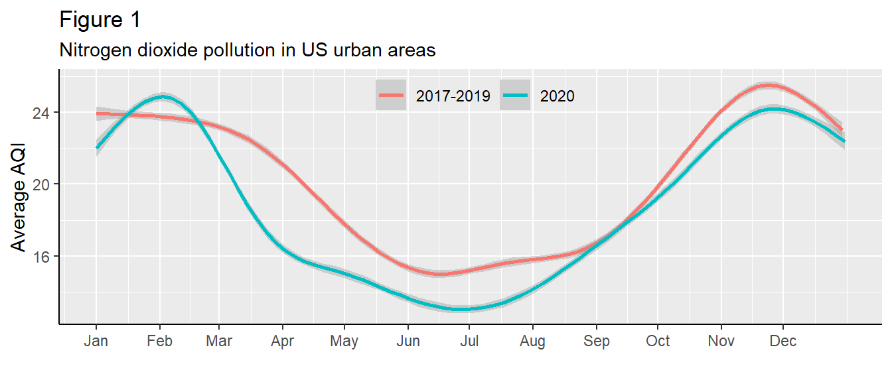
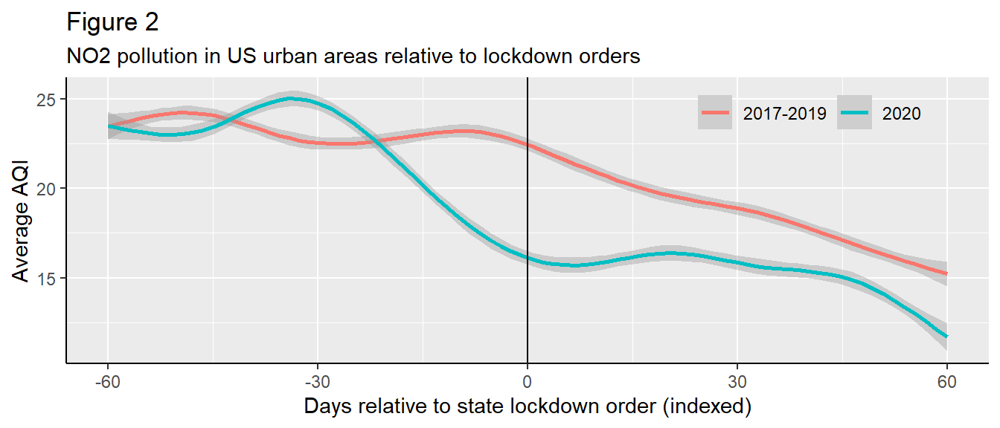
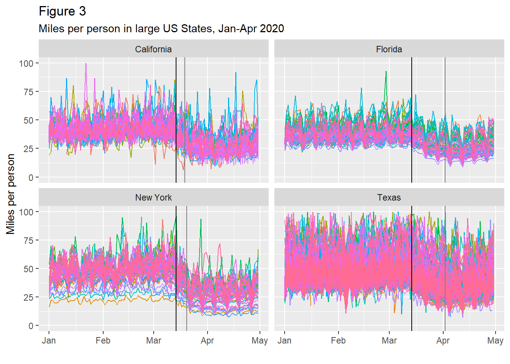
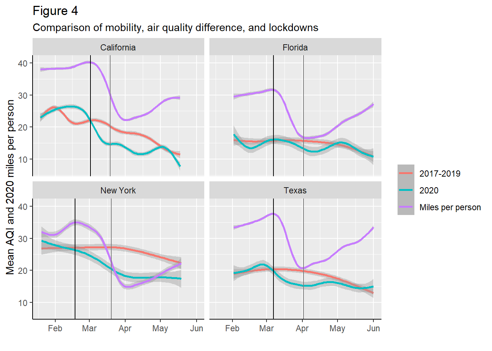

Outdoor air pollution is a global health crisis. Sustained exposure to high levels of pollutants such as nitrogen dioxide (NO2), particulate matter (PM), and sulfur dioxide (SO2) can lead to severe acute and chronic health conditions, including stroke, heart disease, lung cancer, and respiratory illnesses such as asthma. According to the World Health Organization (WHO), ambient outdoor air quality contributes to 4.2 million deaths per year around the world.1 Most air pollutants are predominantly anthropogenic (man-made), deriving from the combustion of fossil fuels for power generation, transportation, industrial processes, or heat in buildings. Therefore, air quality in urban areas, with dense populations and concentrated human activities, is particularly important to public health.
This paper will explore the causal drivers behind the significant improvements in air quality observed in US urban areas in the first half of 2020. Conventional wisdom would suggest that state governments’ policy response to the pandemic in the form of statewide lockdowns forced people to stay home, thereby reducing traffic on the road and urban tailpipe emissions. However, data suggest that both average daily urban air pollution as well as traffic - measured in daily miles traveled per capita as a proxy - began declining well before the implementation of state lockdowns, calling into question the causal relationship between the policy and the outcome. Understanding the influence of public policy on human behavior - behavior that is directly linked with anthropogenic air pollution emissions - is key to public health outcomes. This paper will therefore conclude with a discussion surrounding the implications of such findings for policy and public health, namely the quantifiable benefits of abating urban emissions with low-carbon and energy-efficient technologies, the potential benefits of modal transport shifts and reducing travel in the near term, and the distributional impacts on different demographic groups.
This study draws data from three primary sources: 1) air quality data from The US Environmental Protection Agency (EPA)2, 2) demographic data from The US Census Bureau3, and 3) mobility data from The University of Maryland’s COVID-19 Impact Analysis Platform4 5:
A daily panel data set was formed by geocoding the latitude and longitude of EPA AQ monitors to attain the ID of the census tract in which they are located, and then joining demographic data based on that tract ID. Monitors are then filtered to urban monitors (urban share of population is 100% and census tract area is less than 2 sq. mi.) to ensure representativeness of air quality observations of an entire tract with a given monitor. Mobility data was then joined at the county level (i.e. each tract in the same county has the same mobility observations, as further disaggregated data is not available).
In total, data from **** tracts have a majority non-white population. The medium income of census tracts varies widely, from 9,191 to 189,583 US dollars per year.
Prior to an analysis of the distributional impacts of air quality improvements in 2020, it is imperative to establish whether COVID-19 lockdowns did, in fact, reduce air pollution levels. We first examine average daily NO2 pollution levels in urban areas relative to a 2017-19 baseline on the same day of the year. Figure 1 shows that average urban air pollution levels drop well below the previous years’ baseline at the onset of the pandemic and into the summer, consistent with most literature. Interestingly, however, average AQI in 2020 begins to drop well below the baseline as early as late February. This seems counterintuitive to the idea that stay-at-home mandates caused the drop in NO2 pollution, as the first statewide lockdown was announced on the \(19^{th}\) of March, when average NO2 AQI readings were already a whopping 42.21% below the 2017-19 baseline.

To better understand the relationship between lockdown orders and air quality, we now index our daily air quality observations relative to the date that the state in which a given monitor is located announced their first lockdown order (this approach is further explaind in section 5). If COVID-19 lockdowns truly are the causal driver behind decreased air pollution emissions, one would expect to observe a deviation from previous years’ baselines at around day 0. However, as can be seen in figure 2, average AQI readings at day 0 - the day states implemented their lockdowns in spring 2020 - are already 25.43% below levels on that same day for 2017-19.

It is clear that air quality improved significantly in 2020; what is less clear, however, is the causal role that lockdowns played in these improvements. Section 5 will employ econometric methods to test the causal relationship between lockdowns and AQI.
Our analysis will attempt to demonstrate that there is a statistically significant difference in differences in average AQI observations in 2020 following the implementation of lockdowns relative to the same time period in baseline years (2017-19). The use of a difference-in-differences approach against a baseline (control) group is a result of the seasonality of NO2 pollution levels - NO2 pollution has regular, predictable winter peaks and summer troughs, largely due to increased fuel consumption for building heat in the winter. It would therefore be inaccurate to look at solely the difference in air quality before and after the lockdowns in 2020, since NO2 pollution would be expected to decrease after lockdown orders in March and April regardless of any policy intervention.
Our model is therefore assessing the difference in AQI observations among urban air quality monitors, our unit of observation, before and after the implementation of a policy (lockdown) in our treatment (2020) and control (average AQI observation between 2017-19 at a given monitor on a given day of the year) groups:
\[ AQI_{it} = \beta_0 + \beta_1 treat_{i} + \beta_2 lockdown_{t} + \beta_3 treat*lockdown_{it} + \alpha_i + \gamma_t + \mu_{it} \]
where:Table 1 shows the results of our regression analysis. The coefficient \(post*treat\) is interpreted as, on average, the drop in air quality readings in 2020 after the implementation of statewide lockdowns is 2.2 points greater than the drop between the pre- and post-lockdown periods on the same days in 2017-19. The coefficient is highly statistically significant, which in itself is not surprising - it conceptually represents the difference in area between the red and blue lines on either side of the vertical black line in figure 2, between which one can see a significant difference even with the naked eye.
Nevertheless, as we observe air quality improving well before the implementation of lockdowns, the authors posit that there may be a significant omitted varible problem in this analysis for two key reasons. On one hand, decreased tailpipe emissions (from people staying home) is just one of a plethora of potential sources of air quality improvements. Fuel combustion from power generation, industrial processes, and building heating all contribute to urban air pollution. The onset of the pandemic may have caused both a) an economic slowdown, which decreased industrial activity and commercial demand for power, as well as b) the government to implement lockdowns in response. This would overstate the effect of lockdowns on air quality.
On the other hand, even if improved air quality is a result of individuals staying home, it is entirely possible that they began to do so before a policy intervention out of concern for public health, anxiety surrounding the spread of a deadly virus, or even involuntarily as instructed by their employer. This is the key issue surrounding the above-mentioned lack of randomness surrounding lockdowns - if lockdowns are reactive to an omitted variable, and said omitted variable is simultaneously causing people to stay home (and thus improve air quality), this would cast significant doubt on the validity of the above regression analysis. The subsequent section will explore alternative explanations for the observed decrease in air pollution levels.
As mentioned above, intuition would suggest that a policy intervention (COVID-19 lockdowns) led to a drop in air pollution owing largely to decreased tailpipe emissions from fewer people on the road. However, as demonstrated above, air quality began to drop below the previous years’ baseline well before lockdowns came into place. It is therefore worth a more in-depth assessment of the relationship between individual mobility and air quality, as well as the impact of stay-at-home orders on both. If individuals began to stay home prior to the implementation of state lockdown orders, then this could perhaps better explain the causal mechanisms driving the above-mentioned improvements in air quality in spring 2020, with the policy intervention having less impact on individual behavior (and thus air pollution).
Figure 3 charts miles traveled per person in 2020 at the county level for the four most populous states in the US (mobility data is not available prior to 2020, preventing a baseline mobility comparison). Interestingly, despite statewide lockdown announcements occuring across a range of nearly two weeks (the \(19^{th}\) of March, the \(2^{nd}\) of April, the \(20^{th}\) of March, and the \(2^{nd}\) of April for California, Florida, New York, and Texas, respectively) - indicated by the vertical gray line - all four states seemed to experience a noticeable drop-off in miles traveled per person towards the beginning of the third week of March 2020 (Monday the 15th), indicated by the vertical black line (the actual decline began before this, as demonstrated in figure 4).

Figure 4 now maps average daily miles traveled per person at the state level alongside 2020 average AQI, with the 2017-19 baseline included for benchmarking purposes. Interestingly, with the possible exception of Florida, all states’ air pollution levels appear to deviate below the baseline at nearly the same time that miles per person begins to drop (indicated by the vertical black line). More tellingly, however, all states exhibit both a) substantial decreases in miles per person traveled, and b) NO2 pollution levels significantly below the previous years’ baselines (again with the possible exception of Florida for the latter) well before the implementation of their lockdowns (indicated by the vertical gray line).

This analysis confirms our above suspicions that an omitted variable, likely the growing severity of the public health crisis, altered individual behavior and economic activity prior to the implementation of statewide lockdowns, leading to air quality improvements in 2020. Moving forward, the authors would recommend two further points of study to better understand the causal drivers behind decreases in air quality in 2020:The authors posit three primary implications of our analysis on the causal drivers behind improved urban air quality in 2020:
[1] Health topics: Air pollution, World Health Organization, accessed on April 20, 2021 at https://www.who.int/health-topics/air-pollution.
[2] Annual Data Summary, The US Environmental Protection Agency (EPA), November 24, 2020, https://aqs.epa.gov/aqsweb/airdata/download_files.html#Meta.
[3] Maps and Visualizations, United States Census Bureau, accessed on April 20, 2021 at https://data.census.gov/cedsci/.
[4] University of Maryland COVID-19 Impact Analysis Platform, Maryland Transportation Institute (2020),University of Maryland, College Park, USA., accessed on April 20, 2021 at https://data.covid.umd.edu.
[5] Zhang L, Ghader S, Pack M, Darzi A, Xiong C, Yang M, Sun Q, Kabiri A, Hu S. (2020). An interactive COVID-19 mobility impact and social distancing analysis platform. medRxiv 2020. DOI: https://doi.org/10.1101/2020.04.29.20085472. (preprint).
Health topics: Air pollution, World Health Organization, accessed on April 20, 2021 at https://www.who.int/health-topics/air-pollution.↩︎
Annual Data Summary, The US Environmental Protection Agency (EPA), November 24, 2020, https://aqs.epa.gov/aqsweb/airdata/download_files.html#Meta.↩︎
Maps and Visualizations, United States Census Bureau, accessed on April 20, 2021 at https://data.census.gov/cedsci/.↩︎
University of Maryland COVID-19 Impact Analysis Platform, Maryland Transportation Institute (2020),University of Maryland, College Park, USA., accessed on April 20, 2021 at https://data.covid.umd.edu.↩︎
Zhang L, Ghader S, Pack M, Darzi A, Xiong C, Yang M, Sun Q, Kabiri A, Hu S. (2020). An interactive COVID-19 mobility impact and social distancing analysis platform. medRxiv 2020. DOI: https://doi.org/10.1101/2020.04.29.20085472. (preprint).↩︎